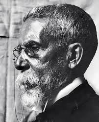

Nome completo: Joaquim Maria Machado de Assis
Nascimento: 21 de junho de 1839, no Morro do Livramento, Rio de Janeiro, Brasil
Falecimento: 29 de setembro de 1908, no Rio de Janeiro, Brasil
Infância e Juventude: Machado de Assis nasceu no Rio de Janeiro, então capital do Império do Brasil, em uma família de classe média. Sua ascendência incluía tanto africanos quanto portugueses, refletindo a diversidade étnica do Brasil. Sua família enfrentou dificuldades financeiras e, após a morte de seu pai, ele foi adotado por um padrinho abastado que financiou sua educação.
Carreira Literária: Machado de Assis começou sua carreira como tipógrafo e jornalista, trabalhando em diversos jornais e revistas do Rio de Janeiro. Ele também foi membro ativo de sociedades literárias da época. Seu primeiro livro, "Crisálidas", foi publicado em 1864, mas foi com "Memórias Póstumas de Brás Cubas" (1881) que ele alcançou reconhecimento nacional e internacional.
Estilo Literário: Machado de Assis é conhecido por sua prosa precisa e irônica, que explorava temas como a natureza humana, a sociedade brasileira e as complexidades das relações sociais. Ele frequentemente brincava com as convenções literárias e sociais, utilizando técnicas como narradores não confiáveis e quebras da quarta parede.
Principais Obras: Além de "Memórias Póstumas de Brás Cubas", outras obras importantes de Machado de Assis incluem "Dom Casmurro" (1899), "Quincas Borba" (1891), "Helena" (1876), "Iaiá Garcia" (1878) e "Esaú e Jacó" (1904).
Legado: Machado de Assis é amplamente reconhecido como um dos maiores escritores de língua portuguesa e sua obra continua a ser estudada e apreciada tanto no Brasil quanto no exterior. Ele foi o primeiro presidente da Academia Brasileira de Letras e é uma figura central na história literária do país.
Machado de Assis deixou um legado duradouro, não apenas por suas obras-primas literárias, mas também por sua contribuição para o desenvolvimento da literatura brasileira e sua capacidade de capturar a essência da condição humana em suas histórias.